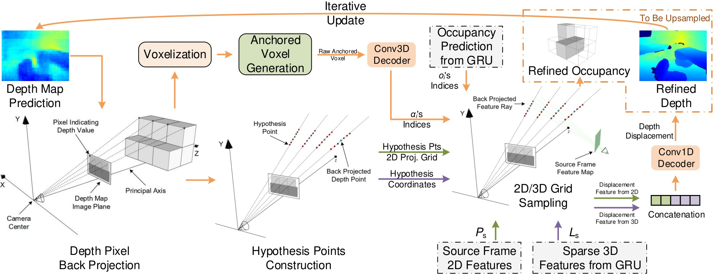
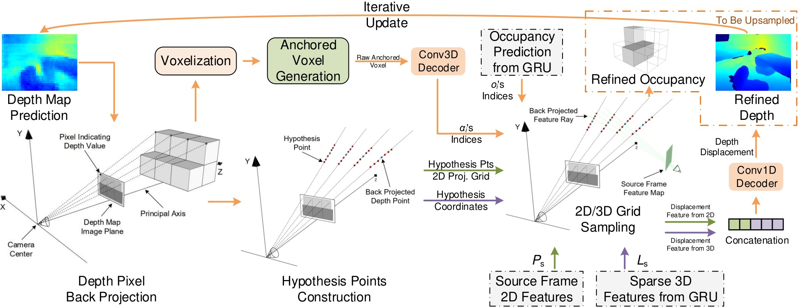
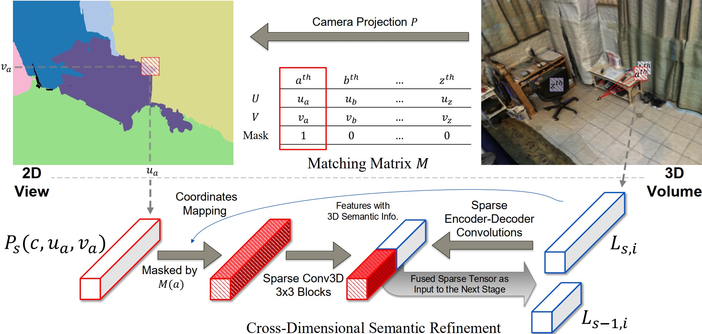

Occupancy Refinement
Both refinements are conducted in a sparse manner to achieve efficiency. The anchored voxel refinement for occupancy is done by back-projecting depth point predictions and then leveraging as geometric priors.
We present a novel real-time capable learning method that jointly perceives a 3D scene’s geometry structure and semantic labels.
Recent approaches to real-time 3D scene reconstruction mostly adopt a volumetric scheme, where a Truncated Signed Distance Function (TSDF) is directly regressed. However, these volumetric approaches tend to focus on the global coherence of their reconstructions, which leads to a lack of local geometric detail. To overcome this issue, we propose to leverage the latent geometric prior knowledge in 2D image features by explicit depth prediction and anchored feature generation, to refine the occupancy learning in TSDF volume.
Besides, we find that this cross-dimensional feature refinement methodology can also be adopted for the semantic segmentation task by utilizing semantic priors. Hence, we proposed an end-to-end cross-dimensional refinement neural network (CDRNet) to extract both 3D mesh and 3D semantic labeling in real time. The experiment results show that this method achieves a state-of-the-art 3D perception efficiency on multiple datasets, which indicates the great potential of our method for industrial applications.
Posed RGB images from monocular videos are wrapped as fragment input for 2D feature extraction, which is used for both depth and 2D semantic predictions for cross-dimensional refinement purposes. To learn the foundational 3D geometry before conducting refinements, the extracted 2D features are back-projected into raw 3D features, $V_s$, in different resolutions without any 2D priors involved. At each resolution, after being processed by the GRU, the output feature $L_s$ in the local volume is further fed into Depth and Semantics refinement modules sequentially to have a 2D-prior-refined feature with better representations.
Both refinements are conducted in a sparse manner to achieve efficiency. The anchored voxel refinement for occupancy is done by back-projecting depth point predictions and then leveraging as geometric priors.
Semantic priors that lie in the 2D semantic prediction are imposed for the learning of 3D semantics, which is proven to be beneficial to help the feature fit for semantics and easier towards the convergence.
With the help of CDR priors, the training process can be transformed from a maximum likelihood estimation (MLE) into a maximum a posteriori (MAP) perspective via Bayes’ rule, which eventually reaches a better convergence.
After the occupancy refinement, the occupancy grid is improved as visualized from the raw (pink) grid into the new (cyan) grid. The back-projected depth points in blue get closer to the ground-truth back-projected depth points in green.

Our method consistently outperforms baseline models and sometimes even surpasses the ground-truth labeling, e.g., in the bottom row, the photo-printed curtain above the bed is correctly recognized as “curtain” and “picture”, whereas the ground truth mistakes it as “other furniture”.
@article{hong2023cross,
title={Cross-Dimensional Refined Learning for Real-Time 3D Visual Perception from Monocular Video},
author={Hong, Ziyang and Yue, C. Patrick},
journal={ICCVW},
year={2023}
}